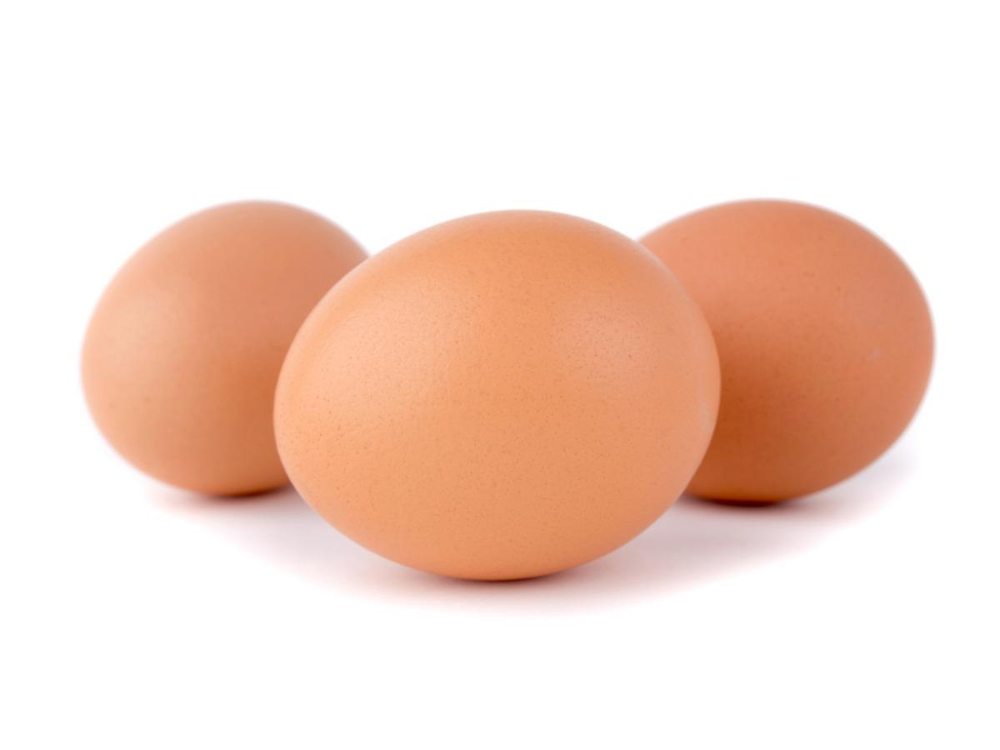

Fried Eggs

Brown chicken eggs
Ingredients
- 2 tablespoons butter
- 2 large eggs
- 2 bay leaves
Steps
- In a small small nonstick skillet, melt butter over medium heat. Break eggs, 1 at a time, into pan; reduce heat to low. Cook slowly until whites are completely set and yolks begin to thicken.
- For eggs sunny-side up, cover pan and cook until yolks thicken, but are not hard. For basted eggs, spoon butter in pan over eggs while cooking. For over-easy eggs, carefully turn eggs to cook both sides but do not cover pan.